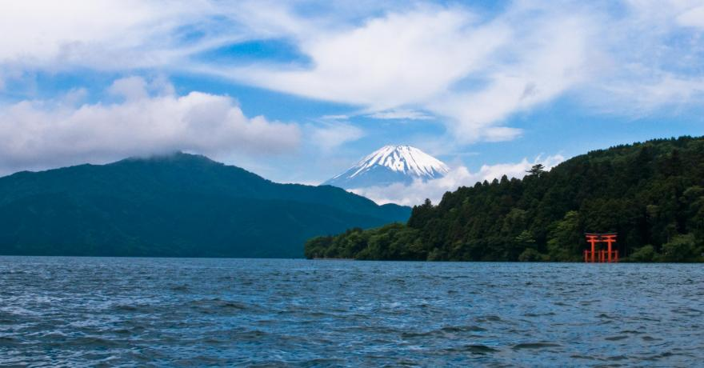
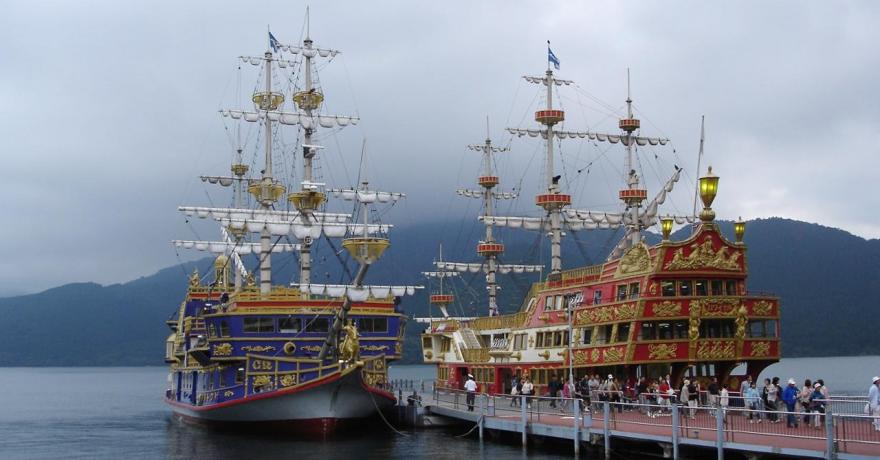

Il ne cesse de fasciner et d’attirer les visiteurs venus découvrir les sources chaudes et les forêts alentour. Mais sans le reflet de Fujisan, le lac Ashi – Ashinoko en japonais – n’aurait peut-être pas autant de succès !
Torii rouge sur le lac Ashi avec le mont Fuji en fond.
Les navires des croisières sur le lac Ashi
Étendue paisible, immobilité soudain brisée par quelques ferries ou bateaux qui font la traversée. D’un coup, le reflet divague, la forme s’étend et se rompt, l’imageest coupée.
Relevez la tête, il faudra attendre un peu avant que tout reprenneson calme, son impassibilité. À moins qu’un autre bateau ne succède au premier et ne fende à nouveau la surface et les espoirs des photographes avec. Mais peut-être est-ce la brume qui, déjà en a découragé plus d’un, ceux venus de loin pour apercevoir, admirer, immortaliser le mythique reflet de l’Enneigé, roi en ses terres et même au-delà, Empereur du Japon souvent mythifié, rarement gravi. Le mont Fuji se laissera voir, ou pas. Le soleil pointera peut-être un œil par-dessus les monts alentours, ou pas.
Ashi, lac du cratère qui forme la caldeira autour du mont Hakone et dont la dernière éruption remonte à 3 000 ans, vit de ses reflets et de ses vues idylliques , en véritable vase clos. Jaloux, peut-être, des faveurs qu’en un autre temps l’artiste Katsushika Hokusai (1760-1849) accorda aux lacs Kawaguchi et Suwa dansses célèbres Trente-six vues du Mont Fuji, Ashinoko peut se targuer d’être aujourd'hui l’un des lacs les plus photographiés du Japon avec l’emblème de l’archipel, le mont Fuji, en arrière-fond.
Bienvenue aux Hokusai de notre temps, nous autres qui prenons trente-six vues du mont Fuji à travers les clics des appareils photos, qui crépitent sur le pont d’un bateau pirate , curieuse attraction touristique voguant sur le lac. Peut-être ces bateaux sont-ils la réminiscence d’un temps mythologique et guerrier où le Dragon à neuf têtes qui sommeillait dans les profondeurs d’Ashinoko terrorisait les habitants avant qu’un moine du mont Komagatake ne l’exorcise pour en faire une divinité protectrice ?
Plus de risques aujourd'hui et la promenade est vivement recommandée. Deux compagnies font la traversée en une trentaine de minutes : "Hakone Sightseeing Boats" et "Izuhakone Sightseeing Boats" de la rive Sud (Hakone-machi ou Moto-Hakone) à la rive Nord (Tôgendai et Kojiri) et vice-versa.
Au loin, le Hakone-jinja se profile. Chaque 31 juillet, à la nuit tombante, les toro-nagashi, lanternesflottantes, font scintiller le lac à l’occasion du Ashino-ko Kosui Matsuri, festival organisé en l’honneur du fameux Dragon à neuf têtes. Le premier site touristique de la région assume son étiquette.
Le torii rouge du temple Hakone-jinja, dans le lac Ashi.